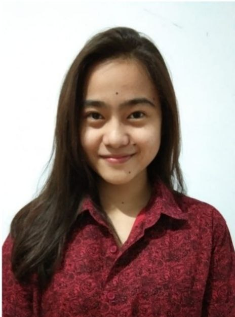

DEA PRATAMA
Perkenalkan nama saya Dea Pratama, biasa dipanggil Dea. Saya merupakan seorang mahasiswi angkatan 2019 di Program Studi Sarjana Pariwisata Fakultas Pariwisata Universitas Udayana. Saat ini saya berada di semester 6 (enam) dimana pada kesempatan kali ini saya mencoba untuk mengikuti Program Merdeka Belajar Kampus Merdeka (MBKM) dengan mengambil Studi Independen Bersertifikat di mitra SEAL (Social Economic Accelerator Lab). Saya mengikuti program ini karena ingin mempelajari lebih dalam mengenai Digital Transformation yang tidak saya pelajari di mata kuliah reluger di kampus. Saya tipe orang yang suka bersosialisasi, mencoba hal baru dan dapat berkerja sama. Dimasa pandemi ini saya mempunyai hobi baru yaitu mmbaca buku, olahraga dan meraton series naruto. Tidak lupa juga semenjak adanya pandemi ini saya juga dapat dikatakan menjadi seorang yang introvert, soooo mari berteman. #PEACE